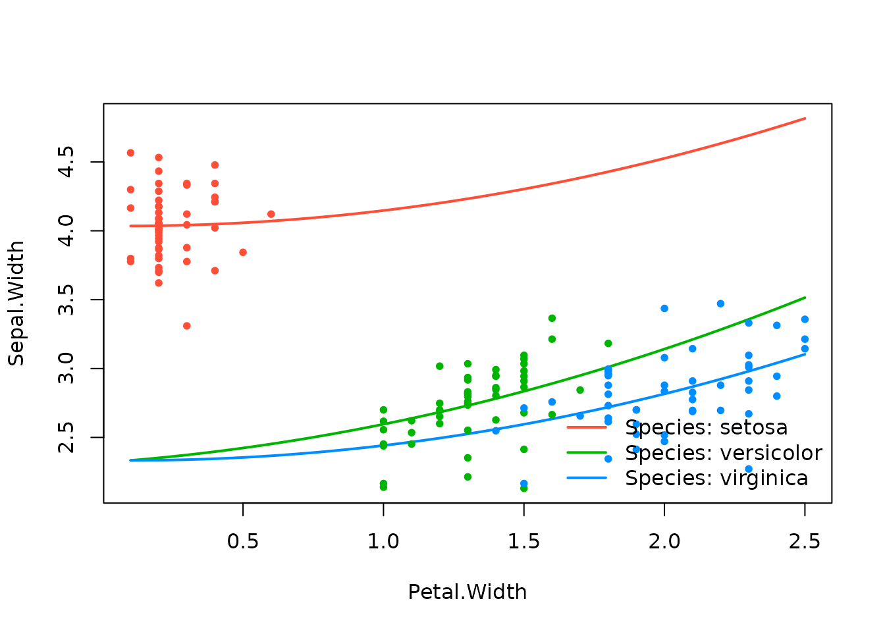
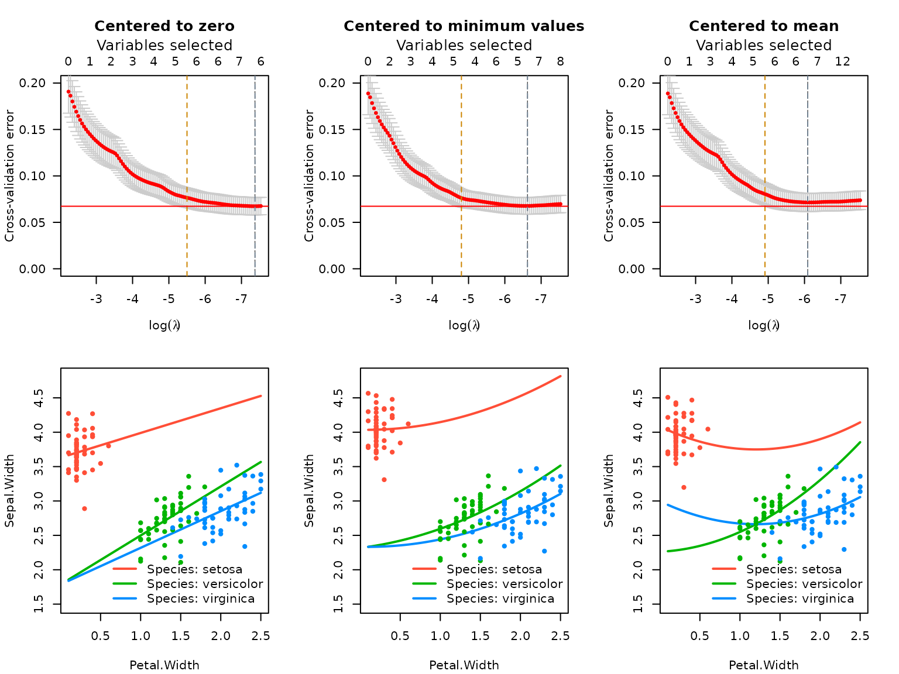
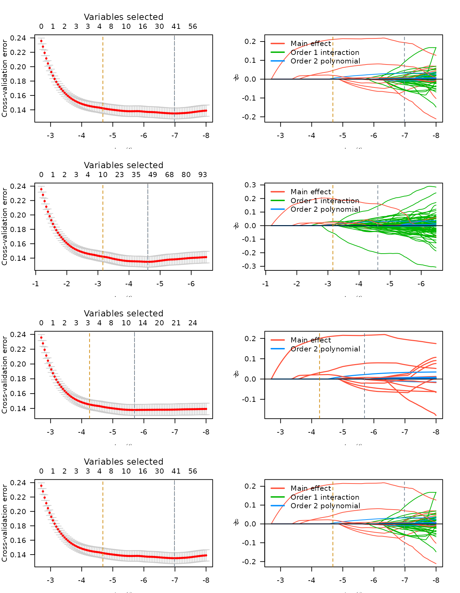
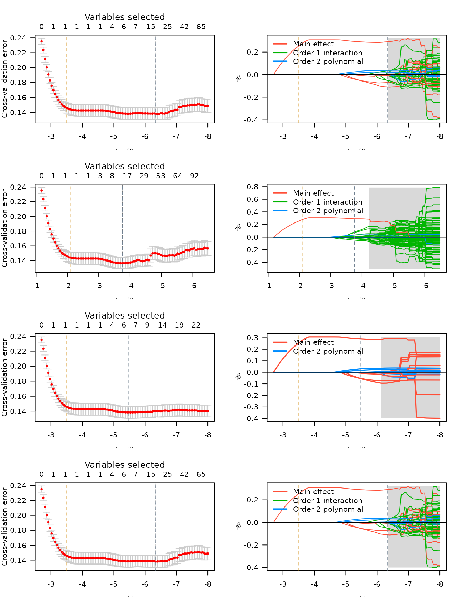
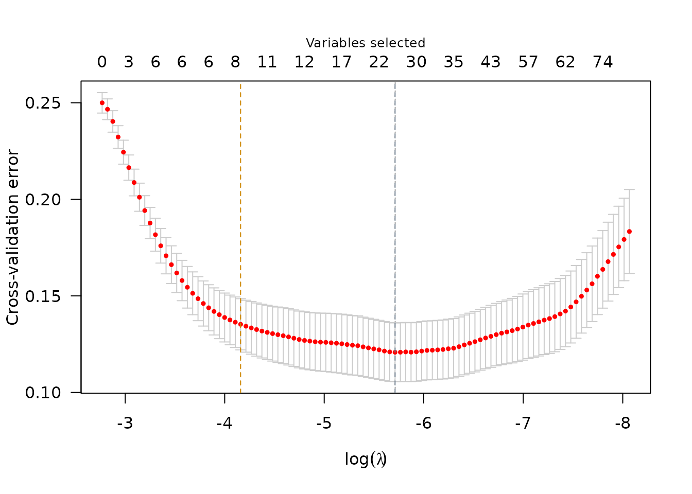
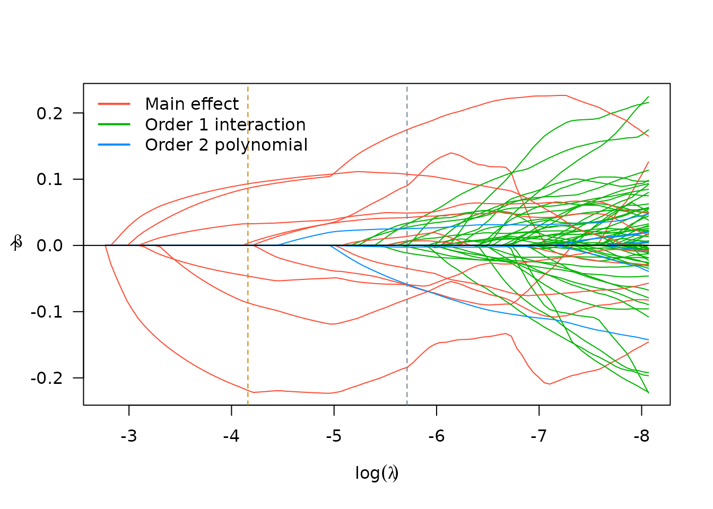
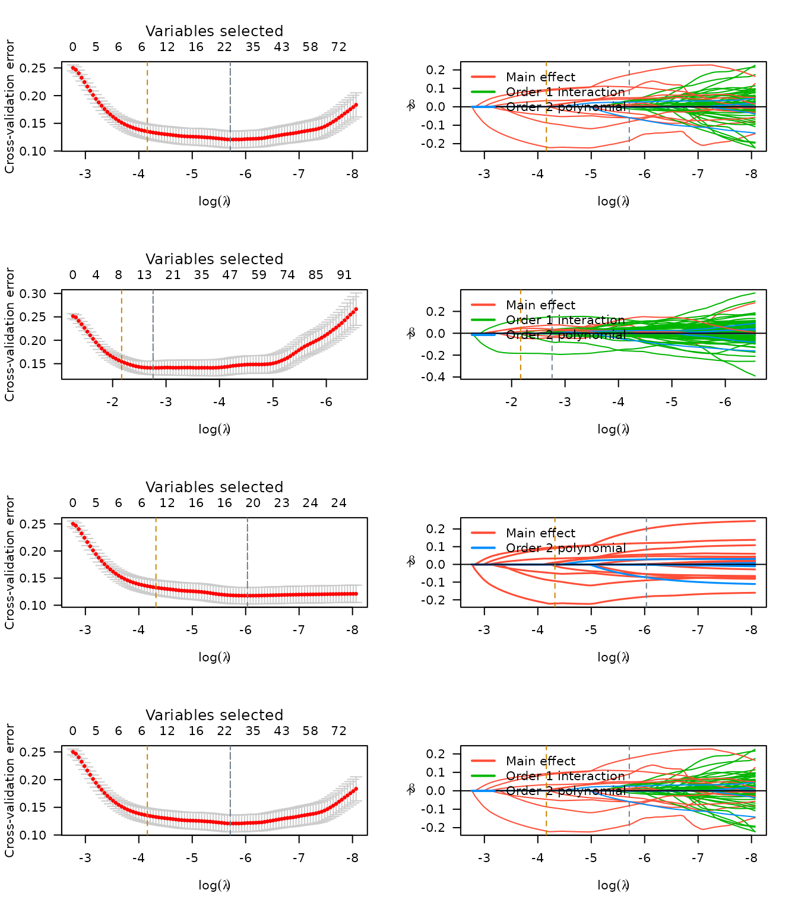

Introduction
The sparseR package aids in the implementation of ranked
sparsity methods for model selection in the presence of interactions and
polynomials.
The following methods are supported, with help from
ncvreg on the backend:
- The sparsity-ranked lasso (SRL)
- Sparsity-ranked MCP/SCAD (SRM/SRS)
- Sparsity-ranked elastic net (SREN)
Additionally, sparseR makes it easy to preprocess data
and get it ready for looking at all candidate interactions of order
k, or all possible polynomials of order
poly.
This document goes through several use cases of the package on different datasets.
Use case: iris data
Data set description
To illustrate in a simple case, consider Fisher’s Iris data set, composed of 4 numeric variables and one categorical variable.
data(iris)
summary(iris)
## Sepal.Length Sepal.Width Petal.Length Petal.Width
## Min. :4.300 Min. :2.000 Min. :1.000 Min. :0.100
## 1st Qu.:5.100 1st Qu.:2.800 1st Qu.:1.600 1st Qu.:0.300
## Median :5.800 Median :3.000 Median :4.350 Median :1.300
## Mean :5.843 Mean :3.057 Mean :3.758 Mean :1.199
## 3rd Qu.:6.400 3rd Qu.:3.300 3rd Qu.:5.100 3rd Qu.:1.800
## Max. :7.900 Max. :4.400 Max. :6.900 Max. :2.500
## Species
## setosa :50
## versicolor:50
## virginica :50
##
##
## If we are interested in predicting Sepal.Width based on
the other variables and their pairwise interactions, have a couple of
options. We can either use the built-in preprocessing for building the
model matrix and fitting the model, or we can manually build the model
matrix and pass it to the sparseR function.
Using formula specification
Passing a formula to sparseR will tell the
function which main effects should be in the model. These are also the
main effects which will indicate which interactions/polynomials should
be investigated. Note that the formula will only accept main effect
terms, and will not allow specification of individual interaction
effects (or other functions of the main effects).
The sparsity-ranked lasso model for all-pairwise interactions can be
fit as follows (cross-validation is performed for lambda
via the ncvreg package, so it is important to set the seed
for reproducibililty).
srl <- sparseR(Sepal.Width ~ ., data = iris, k = 1, seed = 1)The print method will present useful results from these fits:
srl
##
## Model summary @ min CV:
## -----------------------------------------------------
## lasso-penalized linear regression with n=150, p=21
## (At lambda=0.0023):
## Nonzero coefficients: 7
## Cross-validation error (deviance): 0.07
## R-squared: 0.62
## Signal-to-noise ratio: 1.64
## Scale estimate (sigma): 0.267
##
## SR information:
## Vartype Total Selected Saturation Penalty
## Main effect 6 2 0.333 2.45
## Order 1 interaction 12 3 0.250 3.46
## Order 2 polynomial 3 2 0.667 3.00
##
##
## Model summary @ CV1se:
## -----------------------------------------------------
## lasso-penalized linear regression with n=150, p=21
## (At lambda=0.0074):
## Nonzero coefficients: 6
## Cross-validation error (deviance): 0.08
## R-squared: 0.57
## Signal-to-noise ratio: 1.35
## Scale estimate (sigma): 0.284
##
## SR information:
## Vartype Total Selected Saturation Penalty
## Main effect 6 2 0.333 2.45
## Order 1 interaction 12 2 0.167 3.46
## Order 2 polynomial 3 2 0.667 3.00For more detailed model information, the summary method
for sparseR objects displays more information about the
fits (see ?ncvreg::summary.ncvreg for more
information).
# At the lambda which minimizes CVE
summary(srl, at = "cvmin")
## lasso-penalized linear regression with n=150, p=21
## At lambda=0.0023:
## -------------------------------------------------
## Nonzero coefficients : 7
## Expected nonzero coefficients: 2.00
## Average mfdr (7 features) : 0.286
##
## Estimate z mfdr Selected
## Species_setosa 1.106390 25.6231 < 1e-04 *
## Sepal.Length:Species_setosa 0.376189 10.1686 < 1e-04 *
## Sepal.Length_poly_1 0.167953 8.4066 < 1e-04 *
## Petal.Width_poly_2 0.135230 5.6513 < 1e-04 *
## Petal.Width:Species_versicolor 0.467836 4.1960 0.00063055 *
## Sepal.Length:Petal.Length -0.006347 -0.6651 1.00000000 *
## Sepal.Length_poly_2 -0.011020 -0.9665 1.00000000 *
# At the lambda which is within 1 SE of the minimum CVE
summary(srl, at = "cv1se")
## lasso-penalized linear regression with n=150, p=21
## At lambda=0.0074:
## -------------------------------------------------
## Nonzero coefficients : 6
## Expected nonzero coefficients: 1.10
## Average mfdr (6 features) : 0.183
##
## Estimate z mfdr Selected
## Species_setosa 0.80638 18.013 < 1e-04 *
## Sepal.Length_poly_1 0.19734 9.713 < 1e-04 *
## Petal.Width_poly_2 0.09871 4.614 0.00024977 *
## Petal.Width:Species_versicolor 0.27739 3.259 0.04655092 *
## Sepal.Length_poly_2 -0.03363 -2.804 0.21141507 *
## Sepal.Length:Species_setosa 0.04275 2.190 0.84164385 *Finally, plots of either the cross-validation error across
lambda values or the coefficient paths can be produced
fairly easily:
plot(srl, plot_type = "cv")
plot(srl, plot_type = "path")
Importantly, since sparseR with a formula centers and
scales the covariates prior to forming interactions, the coefficients
should be interpreted this way (a 1-unit change in the covariate
corresponds to a 1 SD change in the unit of the main effect, and
parameters involving interactions must be interpreted at the mean value
of involved covariates).
Using model matrix specification
Since the sparseR preprocessing has limits to its
customizability, and often it will be of interest to create interactions
that are centered at prespecified values (as opposed to their mean), it
is also possible to feed in a matrix to sparseR that has
already been preprocessed. The function also allows users to circumvent
the recipes functionality and supply their own model matrix, composed of
interactions and/or polynomials. This may be useful in cases where users
wish to:
- specify their own missing data imputation methods,
- specify the intercept differently than a grand mean (avoid centering variables prior to making certain interactions of interest)
- scale variables differently
The key arguments for this purpose are to set
pre_process to FALSE, and supply
model_matrix and the outcome y. Users may also
want to specify how the model matrix is specified in terms of polynomial
order (the package requires a prefix, such as “poly_1”, or “poly_2” to
denote polynomial terms of orders 1 and 2 respectively) and interaction
seperator (by default, this is “\\:”, which is the default for
model.matrix).
The code below creates a model matrix will all pairwise interactions, however as opposed to the formula, the numeric variables are not centered prior to forming the interactions, and the factor variable of species will be given a reference category (as opposed to a cell-means specification). Therefore, this method will lead to different results.
X <- model.matrix(Sepal.Width ~ .*., data = iris)[,-1]
set.seed(1)
srl2 <- sparseR(pre_process = FALSE, model_matrix = X, y = iris$Sepal.Width)
## Warning in ncvreg(X = X, y = y, ...): Maximum number of iterations reachedSince we have a warning about iterations, note that we can pass
through arguments to ncvreg and fix this issue:
set.seed(1)
srl2 <- sparseR(pre_process = FALSE, model_matrix = X, y = iris$Sepal.Width, max.iter = 1e6)And we can use the same S3 methods to get more information about the SRL model:
srl2
##
## Model summary @ min CV:
## -----------------------------------------------------
## lasso-penalized linear regression with n=150, p=14
## (At lambda=0.0005):
## Nonzero coefficients: 8
## Cross-validation error (deviance): 0.07
## R-squared: 0.64
## Signal-to-noise ratio: 1.77
## Scale estimate (sigma): 0.261
##
## SR information:
## Vartype Total Selected Saturation Penalty
## Main effect 5 3 0.600 2.24
## Order 1 interaction 9 5 0.556 3.00
##
##
## Model summary @ CV1se:
## -----------------------------------------------------
## lasso-penalized linear regression with n=150, p=14
## (At lambda=0.0021):
## Nonzero coefficients: 5
## Cross-validation error (deviance): 0.08
## R-squared: 0.59
## Signal-to-noise ratio: 1.46
## Scale estimate (sigma): 0.277
##
## SR information:
## Vartype Total Selected Saturation Penalty
## Main effect 5 4 0.800 2.24
## Order 1 interaction 9 1 0.111 3.00
summary(srl2, at = "cv1se")
## lasso-penalized linear regression with n=150, p=14
## At lambda=0.0021:
## -------------------------------------------------
## Nonzero coefficients : 5
## Expected nonzero coefficients: 0.00
## Average mfdr (5 features) : 0.000
##
## Estimate z mfdr Selected
## Speciesvirginica -1.1502 -25.15 < 1e-04 *
## Speciesversicolor -1.0558 -23.10 < 1e-04 *
## Sepal.Length 0.4243 16.32 < 1e-04 *
## Petal.Width 0.3390 12.06 < 1e-04 *
## Sepal.Length:Petal.Length -0.0189 -11.68 < 1e-04 *
plot(srl2)Since we did not center/scale any of the variables prior to this fitting procedure, the interpretation of these coefficients should be on the original scale of the predictors, and the origin for the terms involved in interactions is 0, not at the mean of their constituent covariates.
Note also that there are fewer total covariates listed. This is
because model.matrix uses reference cell dummy variables by
default. Another way to do this without the reference category
specification would be to pass pre-process options to
sparseR, or to manually use sparseR_prep to
create the model matrix.
set.seed(1)
srl3 <- sparseR(Sepal.Width ~ ., data = iris, k = 1,
pre_proc_opts = c("none"), max.iter = 1e6)
srl3
##
## Model summary @ min CV:
## -----------------------------------------------------
## lasso-penalized linear regression with n=150, p=21
## (At lambda=0.0006):
## Nonzero coefficients: 6
## Cross-validation error (deviance): 0.07
## R-squared: 0.64
## Signal-to-noise ratio: 1.80
## Scale estimate (sigma): 0.259
##
## SR information:
## Vartype Total Selected Saturation Penalty
## Main effect 6 2 0.333 2.45
## Order 1 interaction 12 4 0.333 3.46
## Order 2 polynomial 3 0 0.000 3.00
##
##
## Model summary @ CV1se:
## -----------------------------------------------------
## lasso-penalized linear regression with n=150, p=21
## (At lambda=0.0041):
## Nonzero coefficients: 5
## Cross-validation error (deviance): 0.08
## R-squared: 0.59
## Signal-to-noise ratio: 1.47
## Scale estimate (sigma): 0.277
##
## SR information:
## Vartype Total Selected Saturation Penalty
## Main effect 6 2 0.333 2.45
## Order 1 interaction 12 2 0.167 3.46
## Order 2 polynomial 3 1 0.333 3.00
summary(srl3, at = "cv1se")
## lasso-penalized linear regression with n=150, p=21
## At lambda=0.0041:
## -------------------------------------------------
## Nonzero coefficients : 5
## Expected nonzero coefficients: 1.32
## Average mfdr (5 features) : 0.264
##
## Estimate z mfdr Selected
## Sepal.Length:Species_setosa 0.18862 21.079 < 1e-04 *
## Sepal.Length_poly_1 0.23292 9.248 < 1e-04 *
## Petal.Width_poly_2 0.06659 6.116 < 1e-04 *
## Species_virginica -0.08945 -2.387 0.32168 *
## Petal.Width:Species_setosa 0.14950 1.542 1.00000 *Centering to different values
In many cases with interactions, it makes sense to center variables
to certain values (or rather, it does not make sense to
center variables to their mean or to zero). Therefore we built some
flexibility into sparseR and sparseR_prep in
order to allow users to change these as the context dictates.
Each covariate’s centering location (in this case their minima) can
be passed into sparseR_prep as follows:
cc <- iris %>%
select(Sepal.Length, Petal.Length, Petal.Width) %>%
apply(2, min, na.rm = TRUE)
p1 <- sparseR_prep(Sepal.Width ~ ., iris, k = 0, extra_opts = list(centers = cc))
(c2min <- bake(p1, iris))
## # A tibble: 150 × 6
## Sepal.Length Petal.Length Petal.Width Species_setosa Species_versicolor
## <dbl> <dbl> <dbl> <dbl> <dbl>
## 1 0.966 0.227 0.131 1 0
## 2 0.725 0.227 0.131 1 0
## 3 0.483 0.170 0.131 1 0
## 4 0.362 0.283 0.131 1 0
## 5 0.845 0.227 0.131 1 0
## 6 1.33 0.397 0.394 1 0
## 7 0.362 0.227 0.262 1 0
## 8 0.845 0.283 0.131 1 0
## 9 0.121 0.227 0.131 1 0
## 10 0.725 0.283 0 1 0
## # ℹ 140 more rows
## # ℹ 1 more variable: Species_virginica <dbl>
summary(c2min)
## Sepal.Length Petal.Length Petal.Width Species_setosa
## Min. :0.0000 Min. :0.0000 Min. :0.0000 Min. :0.0000
## 1st Qu.:0.9661 1st Qu.:0.3399 1st Qu.:0.2624 1st Qu.:0.0000
## Median :1.8115 Median :1.8977 Median :1.5743 Median :0.0000
## Mean :1.8638 Mean :1.5623 Mean :1.4422 Mean :0.3333
## 3rd Qu.:2.5360 3rd Qu.:2.3226 3rd Qu.:2.2303 3rd Qu.:1.0000
## Max. :4.3475 Max. :3.3422 Max. :3.1486 Max. :1.0000
## Species_versicolor Species_virginica
## Min. :0.0000 Min. :0.0000
## 1st Qu.:0.0000 1st Qu.:0.0000
## Median :0.0000 Median :0.0000
## Mean :0.3333 Mean :0.3333
## 3rd Qu.:1.0000 3rd Qu.:1.0000
## Max. :1.0000 Max. :1.0000Or directly into sparseR:
Or, a function can be passed to evaluate the location for each covariate:
p2 <- sparseR_prep(Sepal.Width ~ ., iris, k = 0, extra_opts = list(center_fn = min))
(c2min2 <- bake(p2, iris))
## # A tibble: 150 × 6
## Sepal.Length Petal.Length Petal.Width Species_setosa Species_versicolor
## <dbl> <dbl> <dbl> <dbl> <dbl>
## 1 0.966 0.227 0.131 1 0
## 2 0.725 0.227 0.131 1 0
## 3 0.483 0.170 0.131 1 0
## 4 0.362 0.283 0.131 1 0
## 5 0.845 0.227 0.131 1 0
## 6 1.33 0.397 0.394 1 0
## 7 0.362 0.227 0.262 1 0
## 8 0.845 0.283 0.131 1 0
## 9 0.121 0.227 0.131 1 0
## 10 0.725 0.283 0 1 0
## # ℹ 140 more rows
## # ℹ 1 more variable: Species_virginica <dbl>
identical(c2min2, c2min)
## [1] TRUEPlotting the model
Interactions are notoriously difficult to understand and to
communicate, and visualizations can often be helpful. The
sparseR package has some limited functionality for plotting
the results from these fits, using the visreg package as a
rough guide.
effect_plot(srl, "Petal.Width", by = "Species")
Notice how this changes if the covariates are centered to their minima instead:
effect_plot(srl_centered2min, "Petal.Width", by = "Species")
It’s clear that the model itself can change quite a bit depending on the center location utilized prior to building the interactions. Unfortunately, optimizing the center location for each covariate is a difficult, p-dimensional problem (set in the context of another difficult optimization problem of regularized regression with multiple tuning parameters).
The sparseR package will allow users to compare certain
choices in terms of their cross-validated error, which is a decent
starting point. The plot below shows how the “centered to zero” model
has slightly lower cross-validated error than the best
mean-centered model and the best minimum-centered model.
plot(srl3, plot_type = "cv", ylim = c(0,.2))
abline(h = min(srl3$fit$cve), col = "red")
plot(srl_centered2min, plot_type = "cv", ylim = c(0,.2))
abline(h = min(srl3$fit$cve), col = "red")
plot(srl, plot_type = "cv", ylim = c(0,.2))
abline(h = min(srl3$fit$cve), col = "red")
effect_plot(srl3, "Petal.Width", by = "Species",
plot.args = list(ylim = c(1.5, 4.8)))
effect_plot(srl_centered2min, "Petal.Width", by = "Species",
plot.args = list(ylim = c(1.5, 4.8)))
effect_plot(srl, "Petal.Width", by = "Species",
plot.args = list(ylim = c(1.5, 4.8)))
Though these models look substantially different, it’s worth noting that the predictions obtained from the three models are very close to one another (since the models look similar in the neighborhood of existing data):
p1 <- predict(srl3, at = "cvmin")
p2 <- predict(srl_centered2min, at = "cvmin")
p3 <- predict(srl, at = "cvmin")
cor(cbind(p1, p2 ,p3))
## p1 p2 p3
## p1 1.0000000 0.9903513 0.9873102
## p2 0.9903513 1.0000000 0.9898124
## p3 0.9873102 0.9898124 1.0000000
pairs(cbind(p1, p2 ,p3))
At the CV1se lambda value, there is slightly less agreement in these predictions:
# At CV1se
p4 <- predict(srl3, at = "cv1se")
p5 <- predict(srl_centered2min, at = "cv1se")
p6 <- predict(srl, at = "cv1se")
cor(cbind(p1, p2 ,p3, p4,p5,p6))
## p1 p2 p3 p4 p5 p6
## p1 1.0000000 0.9903513 0.9873102 0.9781221 0.9586728 0.9752579
## p2 0.9903513 1.0000000 0.9898124 0.9714612 0.9784280 0.9627639
## p3 0.9873102 0.9898124 1.0000000 0.9706405 0.9671849 0.9821402
## p4 0.9781221 0.9714612 0.9706405 1.0000000 0.9709760 0.9845977
## p5 0.9586728 0.9784280 0.9671849 0.9709760 1.0000000 0.9504649
## p6 0.9752579 0.9627639 0.9821402 0.9845977 0.9504649 1.0000000
pairs(cbind(p1, p2 ,p3, p4,p5,p6))
effect_plot(srl3, "Petal.Width", by = "Species", at = "cv1se")
effect_plot(srl_centered2min, "Petal.Width", by = "Species", at = "cv1se")
effect_plot(srl, "Petal.Width", by = "Species", at = "cv1se")Using stepwise RBIC
RBIC, or Ranked-sparsity Bayesian Information Criterion, is a ranked sparsity model selection criterion that will correctly penalize interactions (higher than main effects). The benefit of using a stepwise approach informed by RBIC is that there is no shrinkage, and it thus doesn’t matter whether or not (or where) the covariates are centered (usually). The exceptions here occur when the stepwise process is not sequential/hierarchical (i.e. main effects first, then interactions of the “active” main effects, etc.).
Inference on the parameters is still i) difficult because one must account for post-selection inference, and ii) affected by where and whether the covariates are centered. However, the lines themselves will not be affected by centering status.
We can see this in the examples below:
## Centered model
(rbic1 <- sparseRBIC_step(Sepal.Width ~ ., iris, pre_proc_opts = c("center", "scale")))
## Note: sparseRBIC_step is currently experimental and may not behave as expected.
##
## Call: glm(formula = y ~ Species_setosa + Sepal.Length + Petal.Width +
## Species_versicolor + Petal.Length + `Sepal.Length:Species_setosa`,
## family = family, data = X)
##
## Coefficients:
## (Intercept) Species_setosa
## 2.40062 2.14130
## Sepal.Length Petal.Width
## 0.16506 0.44726
## Species_versicolor Petal.Length
## 0.29340 -0.05916
## `Sepal.Length:Species_setosa`
## 0.45943
##
## Degrees of Freedom: 149 Total (i.e. Null); 143 Residual
## Null Deviance: 28.31
## Residual Deviance: 8.999 AIC: 19.65
# Non-centered model
(rbic2 <- sparseRBIC_step(Sepal.Width ~ ., iris, pre_proc_opts = c("scale")))
## Note: sparseRBIC_step is currently experimental and may not behave as expected.
##
## Call: glm(formula = y ~ Species_setosa + Sepal.Length + Petal.Width +
## Species_versicolor + Petal.Length + `Sepal.Length:Species_setosa`,
## family = family, data = X)
##
## Coefficients:
## (Intercept) Species_setosa
## 0.65809 -1.10073
## Sepal.Length Petal.Width
## 0.16506 0.44726
## Species_versicolor Petal.Length
## 0.29340 -0.05916
## `Sepal.Length:Species_setosa`
## 0.45943
##
## Degrees of Freedom: 149 Total (i.e. Null); 143 Residual
## Null Deviance: 28.31
## Residual Deviance: 8.999 AIC: 19.65
effect_plot(rbic1, "Petal.Width", by = "Species", plot.args = list(ylim = c(1.5, 5)))
effect_plot(rbic2, "Petal.Width", by = "Species", plot.args = list(ylim = c(1.5, 5)))
effect_plot(rbic1, "Sepal.Length", by = "Species")
effect_plot(rbic2, "Sepal.Length", by = "Species")Again similar S3 methods are available (note how inference does change for certain parameters based on the centering status). A message is produced because these p-values do not account for post-selection inference.
summary(rbic1)
## P-values have **not** been corrected for multiple comparisons
## Consider sparseRBIC_sampsplit() or sparseRBIC_bootstrap()
##
## Call:
## glm(formula = y ~ Species_setosa + Sepal.Length + Petal.Width +
## Species_versicolor + Petal.Length + `Sepal.Length:Species_setosa`,
## family = family, data = X)
##
## Coefficients:
## Estimate Std. Error t value Pr(>|t|)
## (Intercept) 2.40062 0.12025 19.964 < 2e-16 ***
## Species_setosa 2.14130 0.30584 7.001 9.10e-11 ***
## Sepal.Length 0.16506 0.06017 2.743 0.00687 **
## Petal.Width 0.44726 0.08833 5.064 1.25e-06 ***
## Species_versicolor 0.29340 0.09839 2.982 0.00337 **
## Petal.Length -0.05916 0.15021 -0.394 0.69428
## `Sepal.Length:Species_setosa` 0.45943 0.09997 4.596 9.40e-06 ***
## ---
## Signif. codes: 0 '***' 0.001 '**' 0.01 '*' 0.05 '.' 0.1 ' ' 1
##
## (Dispersion parameter for gaussian family taken to be 0.06292687)
##
## Null deviance: 28.3069 on 149 degrees of freedom
## Residual deviance: 8.9985 on 143 degrees of freedom
## AIC: 19.646
##
## Number of Fisher Scoring iterations: 2
summary(rbic2)
## P-values have **not** been corrected for multiple comparisons
## Consider sparseRBIC_sampsplit() or sparseRBIC_bootstrap()
##
## Call:
## glm(formula = y ~ Species_setosa + Sepal.Length + Petal.Width +
## Species_versicolor + Petal.Length + `Sepal.Length:Species_setosa`,
## family = family, data = X)
##
## Coefficients:
## Estimate Std. Error t value Pr(>|t|)
## (Intercept) 0.65809 0.31114 2.115 0.03616 *
## Species_setosa -1.10073 0.60258 -1.827 0.06983 .
## Sepal.Length 0.16506 0.06017 2.743 0.00687 **
## Petal.Width 0.44726 0.08833 5.064 1.25e-06 ***
## Species_versicolor 0.29340 0.09839 2.982 0.00337 **
## Petal.Length -0.05916 0.15021 -0.394 0.69428
## `Sepal.Length:Species_setosa` 0.45943 0.09997 4.596 9.40e-06 ***
## ---
## Signif. codes: 0 '***' 0.001 '**' 0.01 '*' 0.05 '.' 0.1 ' ' 1
##
## (Dispersion parameter for gaussian family taken to be 0.06292687)
##
## Null deviance: 28.3069 on 149 degrees of freedom
## Residual deviance: 8.9985 on 143 degrees of freedom
## AIC: 19.646
##
## Number of Fisher Scoring iterations: 2Alternatively, sample splitting can be utilized to achieve valid inference. This method divides the data into two samples of equal size, uses the first sample to select the model, and the second one to fit and achieve valid (though potentially low-power) inference. Coefficients which are not selected are bestowed a p-value of 1.
s1 <- sparseRBIC_sampsplit(rbic1)## Note: sparseRBIC_sampsplit is currently experimental and may not behave as expected.
## Warning: `progress_estimated()` was deprecated in dplyr 1.0.0.
## ℹ The deprecated feature was likely used in the sparseR package.
## Please report the issue to the authors.
## This warning is displayed once every 8 hours.
## Call `lifecycle::last_lifecycle_warnings()` to see where this warning was
## generated.| Coefficient | Median_p | Mean_p | Gmean_p | % selected |
|---|---|---|---|---|
| (Intercept) | 0.00000 | 0.00000 | 0.00000 | 100 |
| Species_setosa | 0.00000 | 0.00000 | 0.00000 | 100 |
| Sepal.Length | 0.00003 | 0.11104 | 0.00007 | 90 |
| Sepal.Length:Species_setosa | 0.00870 | 0.30440 | 0.01235 | 70 |
| Petal.Width | 0.50777 | 0.50342 | 0.05012 | 50 |
| Species_versicolor | 1.00000 | 0.70857 | 0.24735 | 30 |
| Petal.Length | 1.00000 | 0.96673 | 0.96036 | 10 |
| Species_virginica | 1.00000 | 0.90080 | 0.61697 | 10 |
s2 <- sparseRBIC_sampsplit(rbic2)## Note: sparseRBIC_sampsplit is currently experimental and may not behave as expected.| Coefficient | Median_p | Mean_p | Gmean_p | % selected |
|---|---|---|---|---|
| (Intercept) | 0.04734 | 0.17159 | 0.02558 | 100 |
| Species_setosa | 0.13169 | 0.16987 | 0.01248 | 100 |
| Sepal.Length | 0.00063 | 0.00644 | 0.00008 | 100 |
| Sepal.Length:Species_setosa | 0.01678 | 0.20926 | 0.00805 | 80 |
| Petal.Width | 0.06679 | 0.41570 | 0.06695 | 60 |
| Species_versicolor | 1.00000 | 0.64032 | 0.37897 | 40 |
| Petal.Width:Species_setosa | 1.00000 | 0.92315 | 0.90718 | 20 |
| Species_virginica | 1.00000 | 0.90834 | 0.78000 | 10 |
| Petal.Length | 1.00000 | 0.98405 | 0.98277 | 10 |
| Sepal.Length:Petal.Length | 1.00000 | 0.93700 | 0.90536 | 10 |
| Sepal.Length:Petal.Width | 1.00000 | 0.90141 | 0.65295 | 10 |
Additionally, inferences based on bootstrapped samples of the data
are available via the sparseRBIC_bootstrap function, which
stores p-values for each coefficient after model selection has been
performed. If a coefficient has not been selected, the p-value is set to
one for that bootstrap iteration, so when the “mean” p-value is
calculated across bootstraps, the underestimation of the p-value due to
model selection is attenuated, as the estimate gets “pulled up” by the
1’s in the vector. Since this may be a conservative approach, we also
display the “geometric” mean which is a measure of central tendency less
sensitive to skew (which many p-values will be highly right skewed).
More research must be done on these techniques to ensure adequate
coverage properties, but given a high enough number of bootstrap samples
they should both be more conservative than the naive, “pretend model
selection never took place” approach. The downside here is that
depending on the size of the data and the number of variables, this
could take quite some time.
Note that the mean p-value across bootstraps is bounded to be greater than 1-P(selected). In some sense, this makes sense, as if a variable has a low probability of being selected, then that variable should have a higher adjusted p-value. However, for variables whose effects will be highly related (i.e. an interaction and a constituent main effect), this may be too conservative.
set.seed(1)
## Centered model
b1 <- sparseRBIC_bootstrap(rbic1)| Coefficient | Mean_p | Gmean_p | % selected |
|---|---|---|---|
| (Intercept) | 0.00000 | 0.00000 | 100 |
| Species_setosa | 0.00000 | 0.00000 | 100 |
| Sepal.Length | 0.00293 | 0.00000 | 100 |
| Sepal.Length:Species_setosa | 0.20011 | 0.00002 | 80 |
| Petal.Width | 0.50000 | 0.00008 | 50 |
| Species_virginica | 0.90004 | 0.46242 | 10 |
| Petal.Length | 0.81087 | 0.54467 | 20 |
| Species_versicolor | 0.70005 | 0.03516 | 30 |
| Sepal.Length:Petal.Width | 0.90000 | 0.32270 | 10 |
| Sepal.Length:Species_versicolor | 0.90222 | 0.68331 | 10 |
| Petal.Width:Species_setosa | 0.90182 | 0.66977 | 10 |
| Sepal.Length:Petal.Length | 0.90000 | 0.22450 | 10 |
set.seed(1)
## Uncentered model
b2 <- sparseRBIC_bootstrap(rbic2)## Note: sparseRBIC_bootstrap is currently experimental and may not behave as expected.| Coefficient | Mean_p | Gmean_p | % selected |
|---|---|---|---|
| (Intercept) | 0.16409 | 0.00012 | 100 |
| Species_setosa | 0.08507 | 0.00002 | 100 |
| Sepal.Length | 0.00293 | 0.00000 | 100 |
| Sepal.Length:Species_setosa | 0.20011 | 0.00002 | 80 |
| Petal.Width | 0.50000 | 0.00019 | 50 |
| Species_versicolor | 0.70005 | 0.03467 | 30 |
| Petal.Length | 0.80063 | 0.31402 | 20 |
| Species_virginica | 0.90002 | 0.42012 | 10 |
| Sepal.Length:Petal.Width | 0.90000 | 0.21649 | 10 |
| Sepal.Length:Species_virginica | 0.90005 | 0.46330 | 10 |
| Petal.Width:Species_setosa | 0.80266 | 0.41523 | 20 |
| Sepal.Length:Petal.Length | 0.90000 | 0.22450 | 10 |
This section is still under development.
Use case: lung data
Data set description
As a more realistic example, we take a data set that is often used to train models that can predict lung cancer status. It has 1027 observations and 14 covariates, including urban/rural, age, years of school, smoking years, number of children, etc.
First, let’s look at the data a little:
data("irlcs_radon_syn")
summary(irlcs_radon_syn)
## ID CITY YRSHOME AGE CASE SCHOOL
## Min. : 1.0 0:246 Min. :20.0 Min. :44.16 0:632 1: 92
## 1st Qu.: 260.5 1:781 1st Qu.:25.0 1st Qu.:61.38 1:395 2:506
## Median : 492.0 Median :31.0 Median :67.84 3:293
## Mean : 505.2 Mean :33.1 Mean :67.45 4:106
## 3rd Qu.: 761.0 3rd Qu.:39.0 3rd Qu.:73.82 5: 30
## Max. :1026.0 Max. :75.0 Max. :84.80
##
## SMKYRS CHILDREN PYR PYRRATE
## Min. : 0.00 Min. : 0.000 Min. : 0.00 Min. :0.00000
## 1st Qu.: 0.00 1st Qu.: 2.000 1st Qu.: 0.00 1st Qu.:0.00000
## Median :13.00 Median : 3.000 Median : 3.60 Median :0.05368
## Mean :20.58 Mean : 3.065 Mean : 19.31 Mean :0.31745
## 3rd Qu.:41.00 3rd Qu.: 4.000 3rd Qu.: 35.07 3rd Qu.:0.58024
## Max. :64.00 Max. :13.000 Max. :138.45 Max. :2.55702
##
## SMKQUIT BMI WLM20 PRELUNG SMKEVER SMKCUR
## Min. : 0.000 Min. :16.64 Min. : 2.176 0:692 0:476 0:705
## 1st Qu.: 0.000 1st Qu.:21.79 1st Qu.: 5.902 1:335 1:551 1:322
## Median : 0.000 Median :23.78 Median : 8.683
## Mean : 4.733 Mean :24.60 Mean :10.914
## 3rd Qu.: 3.325 3rd Qu.:27.40 3rd Qu.:13.246
## Max. :57.355 Max. :41.60 Max. :77.457
## NA's :51Note:
- There are missing values for BMI - we will see how
sparseRhandles this. - Everything is coded as numeric except the outcome, case (this is not
necessary for
sparseRto work), as we will see. -
IDis an arbitrary identifying variable which should not be used in the modeling phase
irlcs_radon_syn <- select(irlcs_radon_syn, -ID)At this point, we will split the data into a test and training set.
Preprocessing
Although the sparseR() function will do it
automatically, it’s generally a good idea to see how the data is being
preprocessed and to examine how the model matrix is built before the
regularization. We can see what sparseR does to preprocess
the data by running the function sparseR_prep, which
utilizes the recipes package to perform preprocessing. At
no time is the outcome used to train any of the steps, except for the
elimination of NA values if any exist.
prep_obj <- sparseR_prep(CASE ~ ., data = train, k = 0, poly = 1)
prep_obj
##
## ── Recipe ──────────────────────────────────────────────────────────────────────
##
## ── Inputs
## Number of variables by role
## outcome: 1
## predictor: 10
## dummy: 4
##
## ── Training information
## Training data contained 770 data points and 43 incomplete rows.
##
## ── Operations
## • Variables removed: <none> | Trained
## • Sparse, unbalanced variable filter removed: <none> | Trained
## • Scaling for: YRSHOME, AGE, SMKYRS, CHILDREN, PYR, PYRRATE, ... | Trained
## • Collapsing factor levels for: SCHOOL | Trained
## • K-nearest neighbor imputation for: YRSHOME, AGE, SCHOOL, ... | Trained
## • Removing rows with NA values in: CITY, YRSHOME, AGE, SCHOOL, ... | Trained
## • Variables removed: CASE | Trained
## • Dummy variables from: CITY, SCHOOL, PRELUNG, SMKEVER, SMKCUR | Trained
## • Sparse, unbalanced variable filter removed: SCHOOL_other | Trained
## Centering to mean for YRSHOME, AGE, SMKYRS, CHILDREN, PYR, PYRRATE, S... [trained]We see that the preprocessor did many things, among which it imputed the data for the missing value using the other predictors in the model. Apparently, by default, this preprocessor will remove variables with “near” zero variance, and that as a result, SMKYRS is not considered (it’s eliminated in an early step).
If we look at this variable, we see that it may be informative:
MASS::truehist(train$SMKYRS)
Therefore, we can tell the preprocessor not to filter this variable
in two ways. First, we could tell it to use zv instead of
nzv, in which case it will only remove zero variance
predictors:
sparseR_prep(CASE ~ ., data = train, k = 0, poly = 1, filter = "zv")
##
## ── Recipe ──────────────────────────────────────────────────────────────────────
##
## ── Inputs
## Number of variables by role
## outcome: 1
## predictor: 10
## dummy: 4
##
## ── Training information
## Training data contained 770 data points and 43 incomplete rows.
##
## ── Operations
## • Variables removed: <none> | Trained
## • Zero variance filter removed: <none> | Trained
## Centering to mean for YRSHOME, AGE, SMKYRS, CHILDREN, PYR, PYRRATE, S... [trained]
## • Scaling for: YRSHOME, AGE, SMKYRS, CHILDREN, PYR, PYRRATE, ... | Trained
## • Collapsing factor levels for: SCHOOL | Trained
## • K-nearest neighbor imputation for: YRSHOME, AGE, SCHOOL, ... | Trained
## • Removing rows with NA values in: CITY, YRSHOME, AGE, SCHOOL, ... | Trained
## • Variables removed: CASE | Trained
## • Dummy variables from: CITY, SCHOOL, PRELUNG, SMKEVER, SMKCUR | Trained
## • Zero variance filter removed: <none> | TrainedOr, we could adjust the options for the near-zero variance filter
(see ?recipes::step_nzv for details):
sparseR_prep(CASE ~ ., data = train, k = 0, poly = 1, extra_opts = list(unique_cut = 5))
##
## ── Recipe ──────────────────────────────────────────────────────────────────────
##
## ── Inputs
## Number of variables by role
## outcome: 1
## predictor: 10
## dummy: 4
##
## ── Training information
## Training data contained 770 data points and 43 incomplete rows.
##
## ── Operations
## • Variables removed: <none> | Trained
## • Sparse, unbalanced variable filter removed: <none> | Trained
## Centering to mean for YRSHOME, AGE, SMKYRS, CHILDREN, PYR, PYRRATE, S... [trained]
## • Scaling for: YRSHOME, AGE, SMKYRS, CHILDREN, PYR, PYRRATE, ... | Trained
## • Collapsing factor levels for: SCHOOL | Trained
## • K-nearest neighbor imputation for: YRSHOME, AGE, SCHOOL, ... | Trained
## • Removing rows with NA values in: CITY, YRSHOME, AGE, SCHOOL, ... | Trained
## • Variables removed: CASE | Trained
## • Dummy variables from: CITY, SCHOOL, PRELUNG, SMKEVER, SMKCUR | Trained
## • Sparse, unbalanced variable filter removed: SCHOOL_other | TrainedNotice that we haven’t told the preprocessor to build any
interactions or polynomials of higher degree than 1. we can do this
simply by setting k and poly respectively to
higher numbers:
sparseR_prep(CASE ~ ., data = train, k = 1, poly = 1, extra_opts = list(unique_cut = 5))
##
## ── Recipe ──────────────────────────────────────────────────────────────────────
##
## ── Inputs
## Number of variables by role
## outcome: 1
## predictor: 10
## dummy: 4
##
## ── Training information
## Training data contained 770 data points and 43 incomplete rows.
##
## ── Operations
## • Variables removed: <none> | Trained
## • Sparse, unbalanced variable filter removed: <none> | Trained
## Centering to mean for YRSHOME, AGE, SMKYRS, CHILDREN, PYR, PYRRATE, S... [trained]
## • Scaling for: YRSHOME, AGE, SMKYRS, CHILDREN, PYR, PYRRATE, ... | Trained
## • Collapsing factor levels for: SCHOOL | Trained
## • K-nearest neighbor imputation for: YRSHOME, AGE, SCHOOL, ... | Trained
## • Removing rows with NA values in: CITY, YRSHOME, AGE, SCHOOL, ... | Trained
## • Variables removed: CASE | Trained
## • Dummy variables from: CITY, SCHOOL, PRELUNG, SMKEVER, SMKCUR | Trained
## • Interactions with: (YRSHOME + AGE + SMKYRS + CHILDREN + PYR + PYRRATE +
## SMKQUIT + BMI + WLM20 + (CITY_X0 + CITY_X1 + SCHOOL_X1 + SCHOOL_X2 +
## SCHOOL_X3 + SCHOOL_X4 + SCHOOL_other + PRELUNG_X0 + PRELUNG_X1 + SMKEVER_X0 +
## SMKEVER_X1 + SMKCUR_X0 + SMKCUR_X1)) * (YRSHOME + AGE + SMKYRS + CHILDREN +
## PYR + PYRRATE + SMKQUIT + BMI + WLM20 + (CITY_X0 + CITY_X1 + SCHOOL_X1 +
## SCHOOL_X2 + SCHOOL_X3 + SCHOOL_X4 + SCHOOL_other + PRELUNG_X0 + PRELUNG_X1 +
## SMKEVER_X0 + SMKEVER_X1 + SMKCUR_X0 + SMKCUR_X1)) | Trained
## • Sparse, unbalanced variable filter removed: SCHOOL_other, ... | Trained
sparseR_prep(CASE ~ ., data = train, k = 1, poly = 2, extra_opts = list(unique_cut = 5))
##
## ── Recipe ──────────────────────────────────────────────────────────────────────
##
## ── Inputs
## Number of variables by role
## outcome: 1
## predictor: 10
## dummy: 4
##
## ── Training information
## Training data contained 770 data points and 43 incomplete rows.
##
## ── Operations
## • Variables removed: <none> | Trained
## • Sparse, unbalanced variable filter removed: <none> | Trained
## Centering to mean for YRSHOME, AGE, SMKYRS, CHILDREN, PYR, PYRRATE, S... [trained]
## • Scaling for: YRSHOME, AGE, SMKYRS, CHILDREN, PYR, PYRRATE, ... | Trained
## • Collapsing factor levels for: SCHOOL | Trained
## • K-nearest neighbor imputation for: YRSHOME, AGE, SCHOOL, ... | Trained
## • Removing rows with NA values in: CITY, YRSHOME, AGE, SCHOOL, ... | Trained
## • Variables removed: CASE | Trained
## • Dummy variables from: CITY, SCHOOL, PRELUNG, SMKEVER, SMKCUR | Trained
## • Interactions with: (YRSHOME + AGE + SMKYRS + CHILDREN + PYR + PYRRATE +
## SMKQUIT + BMI + WLM20 + (CITY_X0 + CITY_X1 + SCHOOL_X1 + SCHOOL_X2 +
## SCHOOL_X3 + SCHOOL_X4 + SCHOOL_other + PRELUNG_X0 + PRELUNG_X1 + SMKEVER_X0 +
## SMKEVER_X1 + SMKCUR_X0 + SMKCUR_X1)) * (YRSHOME + AGE + SMKYRS + CHILDREN +
## PYR + PYRRATE + SMKQUIT + BMI + WLM20 + (CITY_X0 + CITY_X1 + SCHOOL_X1 +
## SCHOOL_X2 + SCHOOL_X3 + SCHOOL_X4 + SCHOOL_other + PRELUNG_X0 + PRELUNG_X1 +
## SMKEVER_X0 + SMKEVER_X1 + SMKCUR_X0 + SMKCUR_X1)) | Trained
## • Orthogonal polynomials on: YRSHOME, AGE, SMKYRS, CHILDREN, ... | Trained
## • Sparse, unbalanced variable filter removed: SCHOOL_other, ... | TrainedNote: This preprocessor does not actually produce any data,
it only prepares all of the steps. In the recipes package, this is known
as prepping the processor. the final step is called
bake, where the data is fed through the processor and a new
data set is returned.
Using the sparseR function
All of the preprocessing options can be accomplished through the main
function for the package, sparseR. The following code runs
a SRL model, an APL model, a main effects model, and an SRL with
polynomials:
lso <- list(
SRL = sparseR(CASE ~ ., train, seed = 1), ## SRL model
APL = sparseR(CASE ~ ., train, seed = 1, gamma = 0), ## APL model
ME = sparseR(CASE ~ ., train, seed = 1, k = 0), ## Main effects model
SRLp = sparseR(CASE ~ ., train, seed = 1, poly = 2) ## SRL + polynomials
)The simple print method allows one to investigate all of these models
lso
## $SRL
##
## Model summary @ min CV:
## -----------------------------------------------------
## lasso-penalized linear regression with n=770, p=204
## (At lambda=0.0009):
## Nonzero coefficients: 41
## Cross-validation error (deviance): 0.13
## R-squared: 0.43
## Signal-to-noise ratio: 0.75
## Scale estimate (sigma): 0.367
##
## SR information:
## Vartype Total Selected Saturation Penalty
## Main effect 21 11 0.524 4.58
## Order 1 interaction 174 24 0.138 13.19
## Order 2 polynomial 9 6 0.667 5.48
##
##
## Model summary @ CV1se:
## -----------------------------------------------------
## lasso-penalized linear regression with n=770, p=204
## (At lambda=0.0093):
## Nonzero coefficients: 4
## Cross-validation error (deviance): 0.14
## R-squared: 0.40
## Signal-to-noise ratio: 0.66
## Scale estimate (sigma): 0.377
##
## SR information:
## Vartype Total Selected Saturation Penalty
## Main effect 21 3 0.143 4.58
## Order 1 interaction 174 0 0.000 13.19
## Order 2 polynomial 9 1 0.111 5.48
##
## $APL
##
## Model summary @ min CV:
## -----------------------------------------------------
## lasso-penalized linear regression with n=770, p=204
## (At lambda=0.0100):
## Nonzero coefficients: 43
## Cross-validation error (deviance): 0.13
## R-squared: 0.43
## Signal-to-noise ratio: 0.75
## Scale estimate (sigma): 0.367
##
## SR information:
## Vartype Total Selected Saturation Penalty
## Main effect 21 4 0.190 1
## Order 1 interaction 174 37 0.213 1
## Order 2 polynomial 9 2 0.222 1
##
##
## Model summary @ CV1se:
## -----------------------------------------------------
## lasso-penalized linear regression with n=770, p=204
## (At lambda=0.0425):
## Nonzero coefficients: 10
## Cross-validation error (deviance): 0.14
## R-squared: 0.40
## Signal-to-noise ratio: 0.66
## Scale estimate (sigma): 0.377
##
## SR information:
## Vartype Total Selected Saturation Penalty
## Main effect 21 3 0.1429 1
## Order 1 interaction 174 6 0.0345 1
## Order 2 polynomial 9 1 0.1111 1
##
## $ME
##
## Model summary @ min CV:
## -----------------------------------------------------
## lasso-penalized linear regression with n=770, p=30
## (At lambda=0.0034):
## Nonzero coefficients: 11
## Cross-validation error (deviance): 0.14
## R-squared: 0.42
## Signal-to-noise ratio: 0.71
## Scale estimate (sigma): 0.371
##
## SR information:
## Vartype Total Selected Saturation Penalty
## Main effect 21 10 0.476 4.58
## Order 2 polynomial 9 1 0.111 5.48
##
##
## Model summary @ CV1se:
## -----------------------------------------------------
## lasso-penalized linear regression with n=770, p=30
## (At lambda=0.0142):
## Nonzero coefficients: 3
## Cross-validation error (deviance): 0.15
## R-squared: 0.39
## Signal-to-noise ratio: 0.63
## Scale estimate (sigma): 0.381
##
## SR information:
## Vartype Total Selected Saturation Penalty
## Main effect 21 3 0.143 4.58
## Order 2 polynomial 9 0 0.000 5.48
##
## $SRLp
##
## Model summary @ min CV:
## -----------------------------------------------------
## lasso-penalized linear regression with n=770, p=204
## (At lambda=0.0009):
## Nonzero coefficients: 41
## Cross-validation error (deviance): 0.13
## R-squared: 0.43
## Signal-to-noise ratio: 0.75
## Scale estimate (sigma): 0.367
##
## SR information:
## Vartype Total Selected Saturation Penalty
## Main effect 21 11 0.524 4.58
## Order 1 interaction 174 24 0.138 13.19
## Order 2 polynomial 9 6 0.667 5.48
##
##
## Model summary @ CV1se:
## -----------------------------------------------------
## lasso-penalized linear regression with n=770, p=204
## (At lambda=0.0093):
## Nonzero coefficients: 4
## Cross-validation error (deviance): 0.14
## R-squared: 0.40
## Signal-to-noise ratio: 0.66
## Scale estimate (sigma): 0.377
##
## SR information:
## Vartype Total Selected Saturation Penalty
## Main effect 21 3 0.143 4.58
## Order 1 interaction 174 0 0.000 13.19
## Order 2 polynomial 9 1 0.111 5.48Similarly, plots can be produced of all of these figures:
n <- lapply(lso, plot, log.l = TRUE)
MCP:
mcp <- list(
SRM = sparseR(CASE ~ ., train, seed = 1, penalty = "MCP"), ## SRM model
APM = sparseR(CASE ~ ., train, seed = 1, gamma = 0, penalty = "MCP"), ## APM model
MEM = sparseR(CASE ~ ., train, seed = 1, k = 0, penalty = "MCP"), ## Main effects MCP model
SRMp = sparseR(CASE ~ ., train, seed = 1, poly = 2, penalty = "MCP") ## SRM + polynomials
)
n <- lapply(mcp, plot, log.l = TRUE)
SCAD (not evaluated):
scad <- list(
SRS = sparseR(CASE ~ ., train, seed = 1, penalty = "SCAD"), ## SRS model
APS = sparseR(CASE ~ ., train, seed = 1, gamma = 0, penalty = "SCAD"), ## APS model
MES = sparseR(CASE ~ ., train, seed = 1, k = 0, penalty = "SCAD"), ## Main effects SCAD model
SRSp = sparseR(CASE ~ ., train, seed = 1, poly = 2, penalty = "SCAD") ## SRS + polynomials
)
n <- lapply(scad, plot, log.l = TRUE)Summaries (using results_summary and
results_1se_summary values within each object; formatting
omitted).
lapply(lso, function(x) bind_rows(x$results_summary, x$results1se_summary))
lapply(mcp, function(x) bind_rows(x$results_summary, x$results1se_summary))| Vartype | Penalty | Total | Selected | Saturation | Selected | Saturation |
|---|---|---|---|---|---|---|
| SRL | ||||||
| Main effect | 4.583 | 21 | 11 | 0.524 | 3 | 0.143 |
| Order 1 interaction | 13.191 | 174 | 24 | 0.138 | 0 | 0.000 |
| APL | ||||||
| Order 2 polynomial | 5.477 | 9 | 6 | 0.667 | 1 | 0.111 |
| Main effect | 1.000 | 21 | 4 | 0.190 | 3 | 0.143 |
| MEL | ||||||
| Order 1 interaction | 1.000 | 174 | 37 | 0.213 | 6 | 0.034 |
| SRLp | ||||||
| Order 2 polynomial | 1.000 | 9 | 2 | 0.222 | 1 | 0.111 |
| Main effect | 4.583 | 21 | 10 | 0.476 | 3 | 0.143 |
| Order 2 polynomial | 5.477 | 9 | 1 | 0.111 | 0 | 0.000 |
| Main effect | 4.583 | 21 | 11 | 0.524 | 3 | 0.143 |
| Order 1 interaction | 13.191 | 174 | 24 | 0.138 | 0 | 0.000 |
| Order 2 polynomial | 5.477 | 9 | 6 | 0.667 | 1 | 0.111 |
| Vartype | Penalty | Total | Selected | Saturation | Selected | Saturation |
|---|---|---|---|---|---|---|
| SRM | ||||||
| Main effect | 4.583 | 21 | 5 | 0.238 | 1 | 0.048 |
| Order 1 interaction | 13.191 | 174 | 8 | 0.046 | 0 | 0.000 |
| APM | ||||||
| Order 2 polynomial | 5.477 | 9 | 5 | 0.556 | 0 | 0.000 |
| Main effect | 1.000 | 21 | 1 | 0.048 | 1 | 0.048 |
| MEM | ||||||
| Order 1 interaction | 1.000 | 174 | 13 | 0.075 | 0 | 0.000 |
| SRMp | ||||||
| Order 2 polynomial | 1.000 | 9 | 1 | 0.111 | 0 | 0.000 |
| Main effect | 4.583 | 21 | 4 | 0.190 | 1 | 0.048 |
| Order 2 polynomial | 5.477 | 9 | 2 | 0.222 | 0 | 0.000 |
| Main effect | 4.583 | 21 | 5 | 0.238 | 1 | 0.048 |
| Order 1 interaction | 13.191 | 174 | 8 | 0.046 | 0 | 0.000 |
| Order 2 polynomial | 5.477 | 9 | 5 | 0.556 | 0 | 0.000 |
Use case: heart data
## Load Data set, correctly code factors + outcome
data("Detrano")
cleveland$thal <- factor(cleveland$thal)
cleveland$case <- 1*(cleveland$num > 0)
# Convert variables into factor variables if necessary!
summary(cleveland)
## age sex cp trestbps
## Min. :29.00 Min. :0.0000 Min. :1.000 Min. : 94.0
## 1st Qu.:48.00 1st Qu.:0.0000 1st Qu.:3.000 1st Qu.:120.0
## Median :56.00 Median :1.0000 Median :3.000 Median :130.0
## Mean :54.44 Mean :0.6799 Mean :3.158 Mean :131.7
## 3rd Qu.:61.00 3rd Qu.:1.0000 3rd Qu.:4.000 3rd Qu.:140.0
## Max. :77.00 Max. :1.0000 Max. :4.000 Max. :200.0
##
## chol fbs restecg thalach
## Min. :126.0 Min. :0.0000 Min. :0.0000 Min. : 71.0
## 1st Qu.:211.0 1st Qu.:0.0000 1st Qu.:0.0000 1st Qu.:133.5
## Median :241.0 Median :0.0000 Median :1.0000 Median :153.0
## Mean :246.7 Mean :0.1485 Mean :0.9901 Mean :149.6
## 3rd Qu.:275.0 3rd Qu.:0.0000 3rd Qu.:2.0000 3rd Qu.:166.0
## Max. :564.0 Max. :1.0000 Max. :2.0000 Max. :202.0
##
## exang oldpeak slope ca thal
## Min. :0.0000 Min. :0.00 Min. :1.000 Min. :0.0000 3 :166
## 1st Qu.:0.0000 1st Qu.:0.00 1st Qu.:1.000 1st Qu.:0.0000 6 : 18
## Median :0.0000 Median :0.80 Median :2.000 Median :0.0000 7 :117
## Mean :0.3267 Mean :1.04 Mean :1.601 Mean :0.6722 NA's: 2
## 3rd Qu.:1.0000 3rd Qu.:1.60 3rd Qu.:2.000 3rd Qu.:1.0000
## Max. :1.0000 Max. :6.20 Max. :3.000 Max. :3.0000
## NA's :4
## num case
## Min. :0.0000 Min. :0.0000
## 1st Qu.:0.0000 1st Qu.:0.0000
## Median :0.0000 Median :0.0000
## Mean :0.9373 Mean :0.4587
## 3rd Qu.:2.0000 3rd Qu.:1.0000
## Max. :4.0000 Max. :1.0000
##
sapply(cleveland, function(x) length(unique(x)))
## age sex cp trestbps chol fbs restecg thalach
## 41 2 4 50 152 2 3 91
## exang oldpeak slope ca thal num case
## 2 40 3 5 4 5 2
cleveland$sex <- factor(cleveland$sex)
cleveland$fbs <- factor(cleveland$fbs)
cleveland$exang <- factor(cleveland$exang)
# Set seed for reproducibility
set.seed(167)
# Split data into test and train
N <- nrow(cleveland)
trainIDX <- sample(1:N, N*.5)
trainDF <- cleveland[trainIDX,] %>%
select(-num)
testDF <- cleveland[-trainIDX,] %>%
select(-num)
# Simulate missing data
trainDF$thal[2] <- trainDF$thalach[1] <- NA
lso <- list(
SRL = sparseR(case ~ ., trainDF, seed = 1), ## SRL model
APL = sparseR(case ~ ., trainDF, seed = 1, gamma = 0), ## APL model
ME = sparseR(case ~ ., trainDF, seed = 1, k = 0), ## Main effects model
SRLp = sparseR(case ~ ., trainDF, seed = 1, poly = 2) ## SRL + polynomials
)
lso
## $SRL
##
## Model summary @ min CV:
## -----------------------------------------------------
## lasso-penalized linear regression with n=151, p=162
## (At lambda=0.0033):
## Nonzero coefficients: 24
## Cross-validation error (deviance): 0.12
## R-squared: 0.51
## Signal-to-noise ratio: 1.04
## Scale estimate (sigma): 0.348
##
## SR information:
## Vartype Total Selected Saturation Penalty
## Main effect 18 14 0.7778 4.24
## Order 1 interaction 135 7 0.0519 11.62
## Order 2 polynomial 9 3 0.3333 5.20
##
##
## Model summary @ CV1se:
## -----------------------------------------------------
## lasso-penalized linear regression with n=151, p=162
## (At lambda=0.0156):
## Nonzero coefficients: 8
## Cross-validation error (deviance): 0.14
## R-squared: 0.45
## Signal-to-noise ratio: 0.82
## Scale estimate (sigma): 0.368
##
## SR information:
## Vartype Total Selected Saturation Penalty
## Main effect 18 8 0.444 4.24
## Order 1 interaction 135 0 0.000 11.62
## Order 2 polynomial 9 0 0.000 5.20
##
## $APL
##
## Model summary @ min CV:
## -----------------------------------------------------
## lasso-penalized linear regression with n=151, p=162
## (At lambda=0.0635):
## Nonzero coefficients: 15
## Cross-validation error (deviance): 0.14
## R-squared: 0.43
## Signal-to-noise ratio: 0.74
## Scale estimate (sigma): 0.376
##
## SR information:
## Vartype Total Selected Saturation Penalty
## Main effect 18 6 0.3333 1
## Order 1 interaction 135 9 0.0667 1
## Order 2 polynomial 9 0 0.0000 1
##
##
## Model summary @ CV1se:
## -----------------------------------------------------
## lasso-penalized linear regression with n=151, p=162
## (At lambda=0.1144):
## Nonzero coefficients: 9
## Cross-validation error (deviance): 0.15
## R-squared: 0.37
## Signal-to-noise ratio: 0.59
## Scale estimate (sigma): 0.393
##
## SR information:
## Vartype Total Selected Saturation Penalty
## Main effect 18 5 0.2778 1
## Order 1 interaction 135 4 0.0296 1
## Order 2 polynomial 9 0 0.0000 1
##
## $ME
##
## Model summary @ min CV:
## -----------------------------------------------------
## lasso-penalized linear regression with n=151, p=27
## (At lambda=0.0024):
## Nonzero coefficients: 17
## Cross-validation error (deviance): 0.12
## R-squared: 0.52
## Signal-to-noise ratio: 1.09
## Scale estimate (sigma): 0.343
##
## SR information:
## Vartype Total Selected Saturation Penalty
## Main effect 18 14 0.778 4.24
## Order 2 polynomial 9 3 0.333 5.20
##
##
## Model summary @ CV1se:
## -----------------------------------------------------
## lasso-penalized linear regression with n=151, p=27
## (At lambda=0.0133):
## Nonzero coefficients: 11
## Cross-validation error (deviance): 0.13
## R-squared: 0.46
## Signal-to-noise ratio: 0.86
## Scale estimate (sigma): 0.364
##
## SR information:
## Vartype Total Selected Saturation Penalty
## Main effect 18 11 0.611 4.24
## Order 2 polynomial 9 0 0.000 5.20
##
## $SRLp
##
## Model summary @ min CV:
## -----------------------------------------------------
## lasso-penalized linear regression with n=151, p=162
## (At lambda=0.0033):
## Nonzero coefficients: 24
## Cross-validation error (deviance): 0.12
## R-squared: 0.51
## Signal-to-noise ratio: 1.04
## Scale estimate (sigma): 0.348
##
## SR information:
## Vartype Total Selected Saturation Penalty
## Main effect 18 14 0.7778 4.24
## Order 1 interaction 135 7 0.0519 11.62
## Order 2 polynomial 9 3 0.3333 5.20
##
##
## Model summary @ CV1se:
## -----------------------------------------------------
## lasso-penalized linear regression with n=151, p=162
## (At lambda=0.0156):
## Nonzero coefficients: 8
## Cross-validation error (deviance): 0.14
## R-squared: 0.45
## Signal-to-noise ratio: 0.82
## Scale estimate (sigma): 0.368
##
## SR information:
## Vartype Total Selected Saturation Penalty
## Main effect 18 8 0.444 4.24
## Order 1 interaction 135 0 0.000 11.62
## Order 2 polynomial 9 0 0.000 5.20
plot(lso$SRL)
lapply(lso, plot, log.l = TRUE)